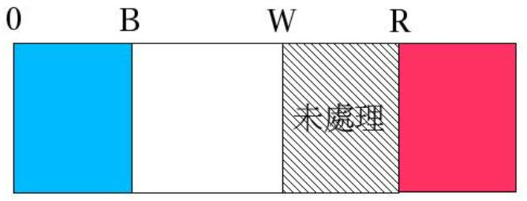
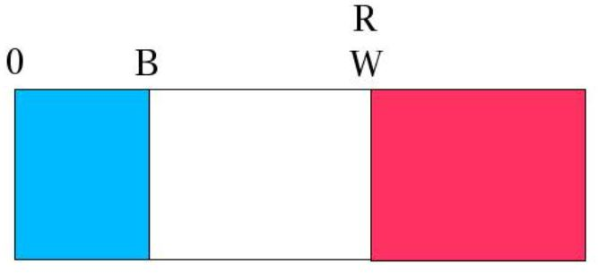

三色旗
November 29, 2021三色旗問題最早由 E.W.Dijkstra 提出，他的用語為 Dutch Nation Flag（Dijkstra 為荷蘭人），其他人多使用 Three-Color Flag 來稱呼。
假設繩子上有紅、白、藍三種顏色的旗子，起初旗子顏色沒有順序，你希望將之分類，並排列為藍、白、紅的順序，只能在繩子上移動，而且一次只能調換兩個旗子，怎麼做才能使得移動次數才會最少？
解法思路
只能在繩子上移動，意味程式中只能使用一個陣列，從陣列開頭進行，遇到藍色往前移，遇到白色留在中間，遇到紅色往後移，以下圖為例：

B、W、R 是索引，要讓移動次數最少的話：
- 若 W 的位置為白色，W 加 1，表示未處理的部份移至白色群組。
- 若 W 的位置為藍色，B 與 W 的元素對調，而 B 與 W 各加 1（因為兩個群組各多了一個元素）。
- 如果 W 的位置是紅色，W 與 R 的元素交換，R 要減 1（表示未處理部份減 1）。
一開始時未處理的 R 索引等於旗子的總數，當 R 索引減至少於 W 的索引時，表示接下來的旗子都是紅色了，此時可以結束移動，如下所示：

若使用雙向鏈結，可以省去 B，在 W 遞增時，若遇到藍色，將藍色移至鏈結前端且 W 加 1，若遇到白色，W 加 1，若遇到紅色，將紅色移至鏈結尾端且 R 減 1。
程式實作
#include <stdio.h>
#include <stdlib.h>
#include <string.h>
#define SWAP_FLAGS(x, y) { char temp; \
temp = flags[x]; \
flags[x] = flags[y]; \
flags[y] = temp; }
void printFlags(char* flags) {
int i;
for(i = 0; i < strlen(flags); i++) {
printf("%c ", flags[i]);
}
printf("\n");
}
void adjust(char* flags) {
int w = 0;
int b = 0;
int r = strlen(flags) - 1;
while(flags[w] == 'B' && w < strlen(flags)) { b++; w++; }
while(flags[r] == 'R' && r > 0) { r--; }
while(w <= r) switch(flags[w]) {
case 'W':
w++;
break;
case 'B':
SWAP_FLAGS(b, w);
b++; w++;
break;
case 'R':
SWAP_FLAGS(r, w);
r--;
}
}
int main() {
char flags[] = {'R', 'W', 'B', 'W', 'W',
'B', 'R', 'B', 'W', 'R', '\0'};
printFlags(flags);
adjust(flags);
printFlags(flags);
return 0;
}
import java.util.*;
public class Flags {
private static void swap(char[] arr, int x, int y) {
char tmp = arr[x]; arr[x] = arr[y]; arr[y] = tmp;
}
public static String adjust(String flags) {
char[] fs = flags.toCharArray();
int b = 0, w = 0, r = fs.length - 1;
while(fs[w] == 'B' && w < fs.length) { b++; w++; }
while(fs[r] == 'R' && r > 0) { r--; }
while(w <= r) switch(fs[w]) {
case 'W':
w++;
break;
case 'B':
swap(fs, b, w);
b++; w++;
break;
case 'R':
swap(fs, r, w);
r--;
}
return new String(fs);
}
public static void main(String[] args) {
System.out.println(adjust(args[0]));
}
}
def adjust(flags):
w = 0
r = len(flags) - 1
while flags[w] == "B" and w < len(flags):
w += 1
while flags[r] == "R" and r > 0:
r -= 1
while w <= r:
if flags[w] == "W":
w += 1
elif flags[w] == "B":
flags.insert(0, flags.pop(w))
w += 1
elif flags[w] == "R":
flags.append(flags.pop(w))
r -= 1
return flags
flags = list(input("輸入三色旗順序（ex. RWBBWRWR）："))
flags = adjust(flags)
print("移動順序後：", str(flags))
def adjust(flags: List[Char]) = {
def categorize(bw: List[Char], remain: List[Char],
r: List[Char]): List[Char] = remain match {
case Nil => bw ++ r
case x::xs => x match {
case 'W' => categorize(bw ++ List(x), xs, r)
case 'B' => categorize(x::bw, xs, r)
case 'R' => categorize(bw, xs, x::r)
}
}
categorize(Nil, flags, Nil)
}
print("輸入三色旗順序（ex. RWBBWRWR）：")
adjust(readLine.toList).foreach(print)
# encoding: UTF-8
def adjust(flags)
w = 0
r = flags.length - 1
while flags[w] == "B" && w < r
w += 1
end
while flags[r] == "R" && r > 0
r -= 1
end
while w <= r
case flags[w]
when "W"
w += 1
when "B"
flags.insert(0, flags.slice!(w))
w += 1
when "R"
flags << flags.slice!(w)
r -= 1
end
end
flags
end
print "輸入三色旗順序（ex. RWBBWRWR）："
flags = gets.chomp!
flags = adjust(flags)
print "移動順序後：#{flags} \n"
function adjust(flags) {
var fs = flags.split("");
var w = 0;
var r = fs.length - 1;
while(fs[w] === 'B' && w < fs.length) { w++; }
while(fs[r] === 'R' && r > 0) { r--; }
while(w <= r) switch(fs[w]) {
case 'W':
w++;
break;
case 'B':
fs.unshift(fs.splice(w, 1));
w++;
break;
case 'R':
fs.push(fs.splice(w, 1));
r--;
}
return fs.join("");
}
print(adjust("RWBWRWBW").toString());
adjust flags = categorize [] flags []
where categorize bw [] r = bw ++ r
categorize bw (x:xs) r = case x of
'W' -> categorize (bw ++ [x]) xs r
'B' -> categorize (x:bw) xs r
'R' -> categorize bw xs (x:r)
main = print $ adjust "WBRRWBWRBWW"
categorize(BW, [], R, BWRFlags) :- append(BW, R, BWRFlags).
categorize(BW, [w|T], R, BWRFlags) :- append(BW, [w], BWFlags),
categorize(BWFlags, T, R, BWRFlags).
categorize(BW, [b|T], R, BWRFlags) :-
categorize([b | BW], T, R, BWRFlags).
categorize(BW, [r|T], R, BWRFlags) :- append(R, [r], RFlags),
categorize(BW, T, RFlags, BWRFlags).
adjust(Flags, BWRFlags) :- categorize([], Flags, [], BWRFlags).
main(_) :-
adjust([w, b, r, r, w, b, w, r, b, w, w], BWRFlags),
writef("%p\n", [BWRFlags]).
# 我寫的玩具語言 https://github.com/JustinSDK/toy_lang
def adjust(flags) {
b = 0
w = 0
r = flags.length() - 1
while flags.get(w) == 'B' and w < flags.length() {
w += 1
}
while flags.get(r) == 'R' and r > 0 {
r -= 1
}
while w <= r {
switch flags.get(w) {
case 'W'
w += 1
case 'B'
flags.swap(b, w)
w += 1
b += 1
default
flags.swap(r, w)
r -= 1
}
}
return flags
}
flags = 'RWBBWRWR'.split('')
println(adjust(flags))